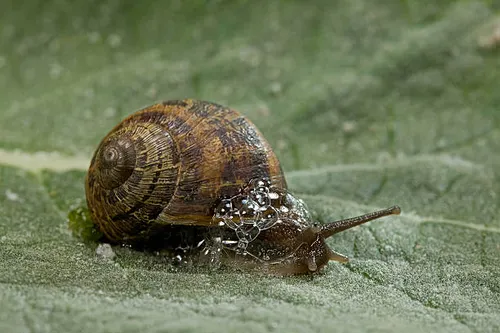

Biodiversité & Espèces Principales

Achatina achatina
Espèce géante d’Afrique de l’Ouest reconnue pour sa croissance rapide et son excellent rendement en élevage intensif. Idéale pour un projet orienté rentabilité et production commerciale.

Archachatina marginata
Espèce robuste à forte longévité, appréciée pour sa chair ferme et sa résistance naturelle aux variations climatiques. Très demandée sur les marchés locaux et gastronomiques.

Helix aspersa
Espèce européenne adaptée aux climats tempérés, largement utilisée en production intensive contrôlée. Idéale pour les élevages sous serre ou en environnement régulé.